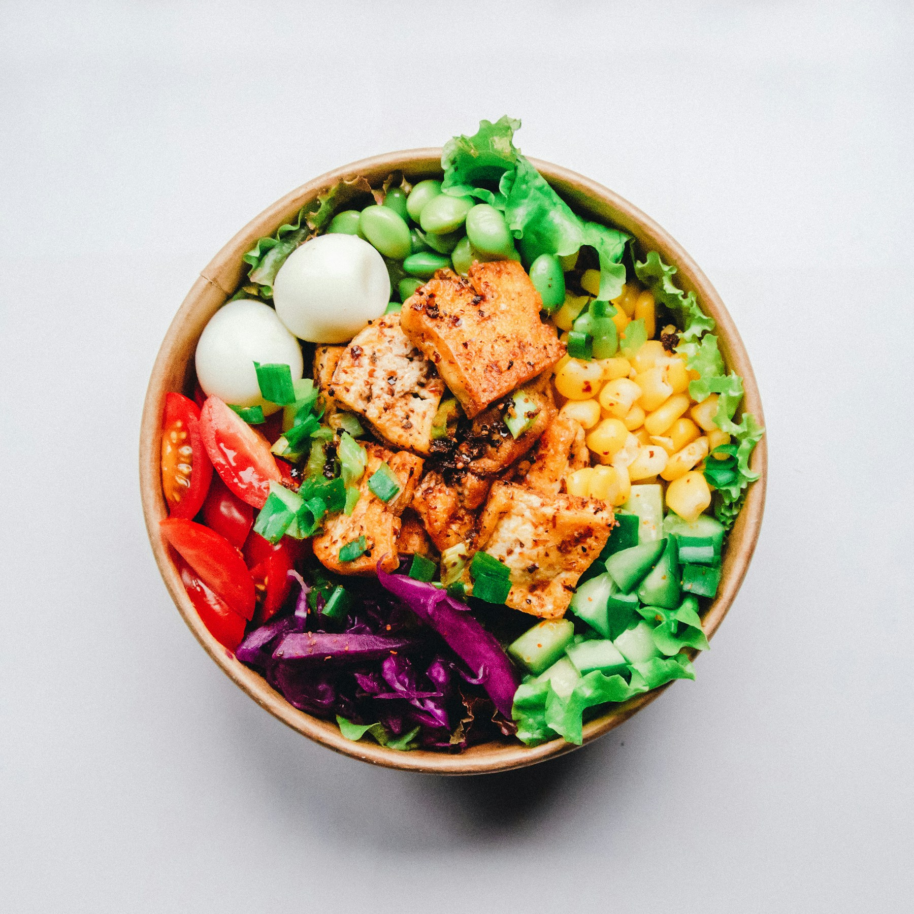
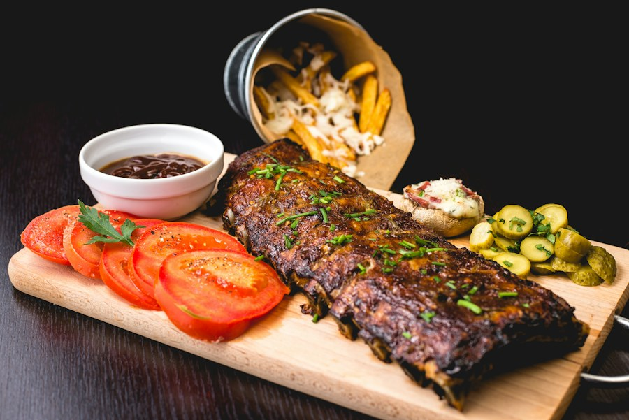

DAVIDSHALL · MALMÖ
En liten bit
Thailand. Mitt i Malmö.
Wokhet, syrligt och alldeles lagom sött. Välkommen till vårt bord på Fersens väg.
Se menynFersens väg 5, Malmö · Öppet för lunch & middag
THAI SMAKER
SEDAN 2004
SEDAN 2004
LAGAT MED HJÄRTA
Dela en rätt.
Beställ en till.
Hos Green Mango möts klassiska thailändska recept och Malmökvällar. Vi lagar maten med färska örter, mycket kärlek och smaker som gärna stannar kvar en stund.
Hitta din favorit
DU ÄR VÄLKOMMEN
Låt kvällen
ta en omväg.
Kom förbi på en snabb lunch, stanna för en lång middag. Vi finns mitt i Davidshall och välkomnar även fyrbenta gäster.
Boka ett bord